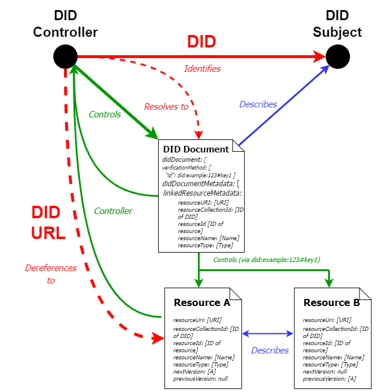

1. Introduction
DID-Linked Resources (DLRs) are digital files that can be retrieved and referenced using a persistent and unique DID URL.
This specification defines common requirements, patterns, algorithms including their request formats and response formats, architectural options, and various considerations for how DID-Linked Resources SHOULD act as persistent identifiers for referencing and retrieving digital Resources (such as data schemas, status lists, trust registries, governance documents, or policy definitions). This specification complements the DID Resolution Specification, including its patterns and algorithms for DID URL resolution and dereferencing.
By using DID URLs which remain conformant with W3C Decentralized Identifiers (DIDs) v1.0 Recommendation [DID-CORE] and the DID Resolution Specification, existing DID Resolvers will be able to dereference these DID URLs to retrieve the identified resources using the DID URL query syntax in this specification.
1.1. Context for Specification
The [DID-CORE] specification defines an interoperable standard for DID documents and associated core properties, however, it does not currently have a standardized way to specify properties of Resources associated with DIDs, nor how to consistently reference nor retrieve them.
Digital Resources are generally stored on traditional centralized-storage endpoints, but this comes with certain drawbacks:
-
Digital Resources could be tampered with by compromising the hosting provider: Digital Resources stored at a centralized web endpoint can be compromised and replaced by malicious actors.
-
Hosting providers could unilaterally cease to host particular clients: Hosting providers could terminate accounts due to factors such as non-payment of fees, violation of Terms of Service, etc.
-
Single point of failure (SPOF): Even with highly-trusted and sophisticated hosting providers who may not present a risk of infrastructure being compromised, a service outage at the hosting provider can make a Resource anchored on their systems inaccessible.
Despite these issues, many decentralized identity and digital credential implementations, even ones that use ledgers or other distributed systems for DIDs, often use centralized storage. From the W3C Verifiable Credential Implementation Guide.
Example schema.org address with full URLs:
{ "@type" : "http://schema.org/Person" , "http://schema.org/address" : { "@type" : "http://schema.org/PostalAddress" , "http://schema.org/streetAddress" : "123 Main St." , "http://schema.org/addressLocality" : "Blacksburg" , "http://schema.org/addressRegion" : "VA" , "http://schema.org/postalCode" : "24060" , "http://schema.org/addressCountry" : "US" } }
Using traditional web endpoints to store digital resources that are critical for a Verifiable Credential to function detracts from the proper functioning and utility that persistently-accessible Decentralized Identifiers offer. It can also result in inconsistent and unstandardized approaches to storing, referencing, and retrieving digital resources such as schemas, trust registries, and status lists.
1.2. A Simple Example
To illustrate the concept of **DID-Linked Resources** (DLRs), one of the core concepts is the **parent-child relationship** between a DID and its resources. Consider the following simple example where **Entity A’s** DID (`did:example:entity123`) is the **parent**, and its associated resources are the **children**. Each resource is uniquely identified by an identifier, such as a UUID, and is bound to the DID under paths like `/resources/{resourceId}`. For example, the URI `did:example:entity123/resources/41c0f0fe-cd4e-45aa-aec5-754db4a63865` points to a specific resource controlled by Entity A.
The DID controller, Entity A, has authority over these child resources, and each resource is independently addressable by its unique identifier, but remains logically tied to the parent DID. This structure allows flexible management of resources while maintaining the DID as the authoritative identifier.
1.3. Architecture Overview
The relationship between DIDs and Resources is shown in the diagram below:

1.4. Design Principles
The following design principles should be taken into consideration. DID-Linked Resources SHOULD:
-
Use existing and familiar DID Core Spec patterns where possible.
-
Support existing DID Resolvers and principles of DID URL dereferencing.
-
Protect against linkrot for long-term retrieval.
-
Enable resources to be versioned and organized, with individual versions being able to be fetched.
-
Include semantic linkage between DID documents and associated resources (via metadata or otherwise).
1.5. Conformance
In addition to sections marked as non-normative, all authoring guidelines, diagrams, examples, and notes in this specification are non-normative. Everything else in this specification is normative. The key words MAY, MUST, MUST NOT, OPTIONAL, and SHOULD in this document are to be interpreted as described in BCP 14 [RFC2119] [RFC8174] when, and only when, they appear in all capitals, as shown here.
2. Terminology
DID Controller: As defined in [DID-CORE].
DID Document: As defined in [DID-CORE].
DID URL: As defined in [DID-CORE].
DID URL Dereferencing: As defined in [DID-CORE].
DID-Linked Resource: Digital files that can be retrieved and referenced using persistent and unique DID URLs.
Resource Collection: An organized and structured set of digital resources, collectively and individually identifiable using persistent and unique DID URLs.
Resource ID: A unique identifier for a specified DID-Linked Resource.
3. DID-Linked Resource URI Syntax
The following is the ABNF definition using the syntax in [RFC5234]. All DID-Linked Resources MUST conform to the DID-Linked Resource URI Syntax ABNF Rules.
; DID-Linked Resource URI
dlr-uri = did path-abempty [ "?" query ] [ "#" fragment ]
; DID (per W3C DID Core)
did = "did:" method ":" method-specific-id
method = 1*method-char
method-char = ALPHA / DIGIT / "-"
method-specific-id = 1*( idchar / ":" )
idchar = ALPHA / DIGIT / "." / "-" / "_" / pct-encoded
pct-encoded = "%" HEXDIG HEXDIG
; Resource path
path-abempty = *( "/" segment )
segment = *pchar
; Optional query and fragment (RFC 3986)
query = *( pchar / "/" / "?" )
fragment = *( pchar / "/" / "?" )
; Character classes
pchar = unreserved / pct-encoded / sub-delims / ":" / "@"
unreserved = ALPHA / DIGIT / "-" / "." / "_" / "~"
sub-delims = "!" / "$" / "&" / "'" / "(" / ")" / "*" / "+" / "," / ";" / "="
HEXDIG = DIGIT / "A" / "B" / "C" / "D" / "E" / "F"
ALPHA = %x41-5A / %x61-7A
DIGIT = %x30-39
=== Semantics
The components of a DID-Linked Resource URI carry the following semantics:
-
The `did` component identifies the base Decentralized Identifier (DID) under which the resource is logically scoped.
-
The `path` identifies the logical or versioned name of the resource. This SHOULD be defined at the DID method level and may represent for example:
-
A generalized resource (`/resources/1234`)
-
A specific resource, such as a schema (`/schema/1234`)
-
A different attachment or file (e.g., `/assets/image.png`)
-
The `fragment` MAY refer to a sub-component within the resource (e.g., a specific field in a schema, or a section in a document).
4. Core Properties
The following tables contain informative references for the core properties defined by this specification, with expected values, and whether or not they are required. The property names in the tables are linked to the normative definitions and more detailed descriptions of each property.
| Property | Required? | Value Constraints |
|---|---|---|
resourceUri
| yes | A string that conforms to a method-specific supported unique identifier format. For example, a UUID: 46e2af9a-2ea0-4815-999d-730a6778227c.
|
resourceId
| yes | A string or a map that conforms to the rules of [[RFC3986]] URIs which MUST directly lead to a location where the resource can be accessed. |
resourceCollectionId
| no | A string that uniquely identifies the DID associated with the resource |
resourceName
| no | A string that uniquely names and identifies a resource. This property, along with the resourceType below, can be used to track version changes within a resource.
|
resourceType
| no | A string that identifies the type of resource. This property, along with the resourceName above, can be used to track version changes within a resource. Not to be confused with mediaType.
|
resourceVersion
| no | (Optional) A string that identifies the version of the resource. This property is provided by the client and can be any value. |
alternativeUri
| no | An array that describes alternative URIs for the resource. |
mediaType
| no | A string that identifies the IANA-media type of the resource. |
created
| no | A string that identifies the date and time the resource was created, as an XML date-time. |
updated
| no | A string that identifies the time the resource was updated, as an XML date-time. |
checksum
| no | A string that may be used to prove that the resource has not been tampered with. |
previousVersionId
| no | A string that identifies the previous version of the resource. |
nextVersionId
| no | A string that identifies the next version of the resource. |
4.1. Resource URI
DID-Linked Resources (DLRs) are content-addressable or identifier-addressable resources associated with a Decentralized Identifier (DID). They are represented as URIs rooted at a valid DID. The full Resource URI identifying a Resource MUST include a DID and a Resource Identifier `resourceId`.
4.2. Resource Identifiers
A Resource Identifier, or `resourceId`, MUST be a unique identifier for a single resource. Two resources under the same DID method MUST NOT share the same `resourceId`.
4.3. Resource Collection ID
The `resourceCollectionId` property is OPTIONAL. This property is the unique identifier of the DID that the resource is bound to, under which resources are logically collected.
For example, the following DID:
did: example: 0 a5 b94 d0- a417-48e d- a6 f 5-4 abc9e95888 d
will derive the Collection ID:
0 a5 b94 d0- a417-48e d- a6 f 5-4 abc9e95888 d
4.4. Resource Name
The `resourceName` property is OPTIONAL. If present, the value of the type property MUST be expressed as an [ASCII string](https://infra.spec.whatwg.org/#ascii-string).
4.5. Resource Type
The `resourceType` property is OPTIONAL. If present, the value of the type property MUST be expressed as an [ASCII string](https://infra.spec.whatwg.org/#ascii-string). In order to maximize interoperability, the resource type and its associated properties SHOULD be registered in the DID Specification Registries [DID-SPEC-REGISTRIES].
4.6. Resource Version
The `resourceVersion` property is OPTIONAL. If present, the value of the type property be expressed as an [ASCII string](https://infra.spec.whatwg.org/#ascii-string).
4.7. Alternative URI
The `alternativeUri` property is OPTIONAL. If present, the value MUST be a set where each item in the set is a URI conforming to [RFC3986].
4.8. Resource Metadata Properties
4.8.1. Media Type {#mediatype}
The `mediaType` property is OPTIONAL. If present, the value must be expressed as an [ASCII string](https://infra.spec.whatwg.org/#ascii-string) and SHOULD match the underlying IANA media type of the file of the resource identified by the resourceId.
4.8.2. Checksum {#checksum}
The `checksum` property is OPTIONAL. If present, the value SHOULD be an equivalent representation of the resource identified by the resourceId.
4.8.3. Created {#created}
The `created` property is OPTIONAL. If present, the value of the property MUST be a string formatted as an XML Datetime normalized to UTC 00:00:00 and without sub-second decimal precision. For example: 2020-12-20T19:17:47Z.
4.8.4. Updated {#updated}
The `updated` property is OPTIONAL. If present, the value of the property MUST be a string formatted as an XML Datetime normalized to UTC 00:00:00 and without sub-second decimal precision. For example: 2020-12-20T19:17:47Z.
4.8.5. PreviousVersionId {#previousversionid}
The `previousVersionId` property is OPTIONAL. If present, the value should reference the directly previous version of the resource. The value of the property MUST be an ASCII string.
4.8.6. NextVersionId {#nextversionid}
The `nextVersionId` property is OPTIONAL. If present, the value should reference the directly next version of the resource. The value of the property MUST be an ASCII string.
5. Binding to DIDs
In the context of DID-Linked Resources (DLRs), **binding** refers to the relationship between a resource and a Decentralized Identifier (DID). This binding is OPTIONAL, but it is highly recommended.
A DID acts as the **parent** that has authority over the resource, which is the **child**. The DID controller (the entity controlling the DID) has control over the resource and can modify, update or deprecate it.
In this context, the DID itself becomes a **collection**, within which one or multiple resources can be referenced.
In this parent-child relationship:
-
The **DID** is the **parent** entity. It serves as the root identifier for an entity, and a collection for the resources, and has the authority to control or manage resources associated with it.
-
The **resource** is the **child** entity. A resource is a specific object or piece of data associated with the DID. The resource can include things like schemas, files, metadata, or any other linked data related to the DID.
The binding of a resource to a DID ensures that the DID controller has control over the resource and that the resource is logically scoped within the DID’s authority.
Multiple resources MAY be bound to the same DID, and each MUST include a unique `resourceId`.
This relationship MAY be enforced and validated by the underlying infrastructure (such as a distributed ledger consensus mechanism), or through other cryptographic techniques, defined by the DID Method implementing DID-Linked Resources.
5.1. Representations
Resources linked to a DID should be represented in a way that maintains a verifiable association with that DID. The metadata describing each Resource SHOULD be included as part of the DID Document Metadata, rather than within the DID Document itself. This allows for clear delineation between identity-related data and externally linked Resources.
To ensure the integrity and traceability of Resources associated with a DID, the `didDocumentMetadat`a object MAY include a `linkedResourceMetadata` array. Each entry in this array corresponds to a distinct Resource that is logically bound to the DID. Resources MAY be grouped or indexed by name and type, allowing multiple different resources (not necessarily different versions of the same one) to be managed within a single logical collection.
This approach provides flexibility for DID controllers to organize and track various types of linked Resources while preserving clear versioning relationships and semantic meaning.
5.2. Representation within DID Document Metadata
The `linkedResourceMetadata` array is used to track these resources, where each entry corresponds to a specific resource within the collection. Each resource metadata entry SHOULD includes the properties included in the Core Properties, including links to previous and subsequent versions (if applicable). This allows for a clear versioning and management system while supporting the inclusion of different types of resources in a single collection.
The syntax of the `didDocumentMetadata` including `linkedResourceMetadata` is as follows:
"didDocumentMetadata" : { "created" : "2020-12-20T19:17:47Z" , "updated" : "" , "deactivated" : false , "versionId" : "bdab59b0-66f5-42d3-b809-1829bdcc0408" , "previousVersion" : "" , "nextVersion" : "" , "linkedResourceMetadata" : [ { // First version of a Resource called PassportSchema "resourceURI" : "did:example:13d5ad44-9e99-428f-81e9-274458cefddc/resources/44547089-170b-4f5a-bcbc-06e46e0089e4" , "resourceCollectionId" : "13d5ad44-9e99-428f-81e9-274458cefddc" , // Common collection ID "resourceId" : "44547089-170b-4f5a-bcbc-06e46e0089e4" , // Old Resource ID and version number "resourceName" : "PassportSchema" , // Resource name must remain the same "resourceType" : "CL-Schema" , // Resource type must remain the same "resourceVersion" : "1.0.1" , // A user-set version "mediaType" : "application/json" , "created" : "2022-07-19T08:40:00Z" , "checksum" : "7b2022636f6e74656e74223a202274657374206461746122207d0ae3b0c44298" , // Old version checksum "previousVersionId" : "" , // empty string, since no previous version "nextVersionId" : "bb2118f3-5e55-4510-b420-33ef9e1726d2" , // Points to next version below }, { // Second version of a Resource called PassportSchema "resourceURI" : "did:example:13d5ad44-9e99-428f-81e9-274458cefddc/resources/bb2118f3-5e55-4510-b420-33ef9e1726d2" , "resourceCollectionId" : "13d5ad44-9e99-428f-81e9-274458cefddc" , // Common collection ID "resourceId" : "bb2118f3-5e55-4510-b420-33ef9e1726d2" , // New Resource ID and version number "resourceName" : "PassportSchema" , // Resource name must remain the same "resourceType" : "JSONSchema2020" , // Resource type must remain the same "resourceVersion" "1.0.1" // user-set semantic version control "mediaType" : "application/json" , "created" : "2022-08-07T08:40:00Z" , "checksum" : "9123dcbb0b42652b0e105956c68d3ca2ff34584f324fa41a29aedd32b883e131" , // New version checksum "previousVersionId" : "44547089-170b-4f5a-bcbc-06e46e0089e4" , // Points to previous version above "nextVersionId" : "0be87654-4a48-4f8e-8789-15ec3589ccdd" // Points to next version. Empty string if no new version }, { // First version of a different Resource called IDCardSchema "resourceURI" : "did:example:13d5ad44-9e99-428f-81e9-274458cefddc/resources/12345678-90ab-cdef-1234-567890abcdef" , "resourceCollectionId" : "13d5ad44-9e99-428f-81e9-274458cefddc" , // Same collection ID "resourceId" : "12345678-90ab-cdef-1234-567890abcdef" , // New Resource ID and version number "resourceName" : "IDCardSchema" , // Resource name must remain the same "resourceType" : "JSONSchema2020" , // Resource type must remain the same "resourceVersion" : "1.0.0" , // User-set version "mediaType" : "application/json" , "created" : "2022-09-01T09:30:00Z" , "checksum" : "a1b2c3d4e5f6g7h8i9j0k1l2m3n4o5p6q7r8s9t0u1v2w3x4y5z6" , // Version checksum "previousVersionId" : "" , // Empty string, no previous version "nextVersionId" : "" // Empty string, no next version } ] }
All required fields defined under Core Properties MUST be included for each Resource Metadata entry.
5.3. Resource Representation
Resources linked to a DID via a DID-Linked Resource mechanism MUST be retrievable either individually (by their full resourceId) or in aggregate (by querying resources linked to a given DID, using a particular filter).
When queried individually, the result MUST return the full Resource representation associated with the provided resourceId.
When queried in aggregate, the result MUST return an array of Resource Metadata entries, each describing a distinct Resource or version of the same resource. These metadata entries provide an overview of the linked Resources without including the Resources’ full content or returning the DID Document itself.
6. Resource Parameters
The Resource URI syntax supports a simple format for parameters (see section Query in [DID-CORE]). Adding a resource parameter to a Resource URI means that the parameter becomes part of the identifier for a resource.
Resource parameters are completely independent of any specific DID method and function the same way for all DIDs.
| Parameter | Type | Description |
|---|---|---|
resourceId
| A string that conforms to a method specific unique identifier format. | The unique identifier of a particular DID-Linked Resource. |
resourceCollectionId
| A string that conforms to a method specific unique identifier format. | Can be used to query all resources associated with a DID if combined with resourceMetadata=true.
|
resourceName
| A string. | The specific name of a DID-Linked Resource. |
resourceType
| A string. | The specific type of a DID-Linked Resource. |
resourceVersionTime
| A JSON String serialized as an XML Datetime normalized to UTC 00:00:00 and without sub-second decimal precision. | Used to fetch a version of a resource at a specific point in time. |
checksum
| A string. | Used to specify a particular resource checksum to demonstrate it is untampered. |
resourceMetadata
| Boolean. | Used to fetch metadata related to a specific resource or group of resources. |
7. Resolution and Dereferencing
Requests to fetch Resources are considered as a DID URL Dereferencing scenario it uses [DID URL paths](https://w3c.github.io/did-core/#path) to lead to a Resource object, rather than a DIDDoc.
The DID URL dereferencing function dereferences a Resource URI (a type of DID URL), into a resource with contents depending on the DID URL’s components, including the DID method, method-specific identifier, path, query, and fragment. This process depends on DID resolution of the DID contained in the DID URL. DID URL dereferencing might involve multiple steps (e.g., when the DID URL being dereferenced includes a fragment), and the function is defined to return the final resource after all steps are completed.
Normal DID URL dereferencing can be understood as a two-step process:
-
Resolution: The DID is resolved to its corresponding DID Document using the relevant DID method.
-
Dereferencing: A Resource is located using the path, query, and/or fragment components of the DID URL, which point to the Resource either directly or by reference.
Unlike standard DID dereferencing that fetches a section of the DID Document (such as a service or verification method), dereferencing a Resource URI returns an external Resource object that is linked to, but not contained within, the DID Document.
Dereferencing a Resource URI returns the full Resource representation. In parallel, a metadata representation describing that Resource MUST also be obtainable—either alongside the Resource itself or via a distinct query mechanism (e.g., via content negotiation or an aggregate query over the DID).
This metadata allows clients to understand key attributes of the Resource without retrieving or parsing the entire Resource content. It also supports version tracking, indexing, and discoverability in decentralized systems.
Below is an example of a Resource Metadata structure:
{ "resourceUri" : "did:example:13d5ad44-9e99-428f-81e9-274458cefddc/resources/bb2118f3-5e55-4510-b420-33ef9e1726d2" , "resourceCollectionId" : "13d5ad44-9e99-428f-81e9-274458cefddc" , "resourceId" : "bb2118f3-5e55-4510-b420-33ef9e1726d2" , "resourceName" : "PassportSchema" , "resourceType" : "JSONSchemaValidator2020" , "resourceVersion" : "1.0.1" , "mediaType" : "application/json" , "created" : "2022-04-20T20:19:19Z" , "checksum" : "a7c369ee9da8b25a2d6e93973fa8ca939b75abb6c39799d879a929ebea1adc0a" , "previousVersionId" : "67f2df00-0b6e-404b-8c70-1d63200e6412" , "nextVersionId" : "98922424-c214-4439-b52c-f68ddb450b40" , "alsoKnownAs" : [{ "uri" : "https://example.com/alternative-uri" , "description" : "Alternative URI description" }, { "uri" : "https://example.com/alternative-uri" , "description" : "Alternative URI description" }] }
8. Rules and Logic for Handling Ambiguous Queries
This section describes how the resolver handles complex or ambiguous dereferencing requests. The resolver applies consistent logic and default behaviors to ensure predictable outcomes for clients.
8.1. Ambiguity Triggers Errors
If a query results in multiple matching resources and does not include sufficient parameters to disambiguate between them, the resolver MUST return an error.
For example, a query that specifies a `resourceType` where multiple resources share that type but differ in `resourceName` will result in an error due to ambiguity.
8.2. Multiple Versions of the Same Resource
If multiple versions of a single resource exist—meaning the resources have the same `resourceType` and `resourceName`, but different `versionId` values—and no specific version is requested, the resolver MUST default to returning the latest version.
This situation is not considered ambiguous, as the resource identity is clear; only the version is unspecified.
8.3. Ambiguous Query with `resourceMetadata=true`
When a query is ambiguous, but includes the `resourceMetadata=true` parameter, the resolver SHOULD return metadata for all matching resources that could be the intended target.
This enables clients to inspect available options and decide which resource to dereference.
For example, the following request would return metadata for all resources matching the specified `resourceType`, regardless of differing `resourceName` values.:
Request format
did: example: c1685 ca0-1 f 5 b-439 c-8e b8-5 c0e85 ab7 cd0 ?resourceType=Str in g&resourceMeta data =true
Response format
{ "@context" : "https://w3id.org/did-resolution/v1" , "dereferencingMetadata" : { "contentType" : "application/did+ld+json" , "retrieved" : "2023-04-26T15:38:26Z" , "did" : { "didString" : "did:example:c1685ca0-1f5b-439c-8eb8-5c0e85ab7cd0" , "methodSpecificId" : "c1685ca0-1f5b-439c-8eb8-5c0e85ab7cd0" , "method" : "example" } }, "contentStream" : { "created" : "2023-01-25T11:58:10.390039347Z" , "versionId" : "e5615fc2-6f13-42b1-989c-49576a574cef" , "linkedResourceMetadata" : [ { "resourceURI" : "did:example:c1685ca0-1f5b-439c-8eb8-5c0e85ab7cd0/resources/9ba3922e-d5f5-4f53-b265-fc0d4e988c77" , "resourceCollectionId" : "c1685ca0-1f5b-439c-8eb8-5c0e85ab7cd0" , "resourceId" : "9ba3922e-d5f5-4f53-b265-fc0d4e988c77" , "resourceName" : "exampleResourceName1" , "resourceType" : "exampleResourceType" , "mediaType" : "application/json" , "resourceVersion" : "" , "created" : "2023-01-25T12:08:39.63Z" , "checksum" : "e1dbc03b50bdb995961dc8843df6539b79d03bf49787ed6462189ee97d27eaf3" , "previousVersionId" : null , "nextVersionId" : null }, { "resourceURI" : "did:example:c1685ca0-1f5b-439c-8eb8-5c0e85ab7cd0/resources/e733ebb7-c8dd-41ed-9d42-33bceea70952" , "resourceCollectionId" : "c1685ca0-1f5b-439c-8eb8-5c0e85ab7cd0" , "resourceId" : "e733ebb7-c8dd-41ed-9d42-33bceea70952" , "resourceName" : "exampleResourceName2" , "resourceType" : "exampleResourceType" , "mediaType" : "application/json" , "resourceVersion" : "" , "created" : "2023-01-25T12:04:52.26Z" , "checksum" : "cffd829b06797f85407be9353056db722ca3eca0c05ab0462a42d30f19cdef09" , "previousVersionId" : null , "nextVersionId" : null } ] }, "contentMetadata" : {} }
8.4. HTTP Accept Headers
Clients MAY use the `Accept` HTTP header to express a preference for the media type of the dereferenced resource.
The resolver MUST respect the `Accept` header if possible and return a resource representation that matches the requested media type. If no exact match is found, the resolver SHOULD return an error status, following the statuses in the DID Resolution Spec, or fall back to a default media type if appropriate.
9. Resolution and Dereferecing examples
9.1. ResourceMetadata and Filter
This parameter is a filter that specifically returns metadata of one or more resources and can be combined with other filters, for specific filtering. The optional variants are:
-
`resourceMetadata=true`
-
`resourceMetadata=false`
-
Unused
For example:
Request format
Here, there is a composite query, requesting the `resourceName`, `resourceType` and `resourceMetadata=true`. This filter returns the metadata of ALL resources of this name and type.
did: example: d8 ac0372-0 d4 b-413e-8e f 5-8e8 f 07822 b2 c?resourceType=exampleSchema&resourceName=exampleResourceName&resourceMeta data =true
Response format
{ "@context" : "https://w3id.org/did-resolution/v1" , "dereferencingMetadata" : { "contentType" : "application/did+ld+json" , "retrieved" : "2023-04-27T11:10:17Z" , "did" : { "didString" : "did:example:d8ac0372-0d4b-413e-8ef5-8e8f07822b2c" , "methodSpecificId" : "d8ac0372-0d4b-413e-8ef5-8e8f07822b2c" , "method" : "example" } }, "contentStream" : { "created" : "2023-02-21T14:28:47.40Z" , "versionId" : "44f49254-8106-40ee-99ad-e50ac9517346" , "linkedResourceMetadata" : [ { "resourceURI" : "did:example:d8ac0372-0d4b-413e-8ef5-8e8f07822b2c/resources/bae5cb6c-564a-4ed4-8c0e-d5c3b0f8ae0a" , "resourceCollectionId" : "d8ac0372-0d4b-413e-8ef5-8e8f07822b2c" , "resourceId" : "bae5cb6c-564a-4ed4-8c0e-d5c3b0f8ae0a" , "resourceName" : "exampleResourceName" , "resourceType" : "exampleResourceType" , "mediaType" : "application/json" , "resourceVersion" : "1.14.41" , "created" : "2023-02-22T08:57:23.34Z" , "checksum" : "93ba6f3c55ee073e6278f98e820776e73cfd9d3e32dc5882507ee8effbdbfadd" , "previousVersionId" : "40829caf-b415-4b1d-91a3-b56dfb6374f4" , "nextVersionId" : null }, { "resourceURI" : "did:example:d8ac0372-0d4b-413e-8ef5-8e8f07822b2c/resources/40829caf-b415-4b1d-91a3-b56dfb6374f4" , "resourceCollectionId" : "d8ac0372-0d4b-413e-8ef5-8e8f07822b2c" , "resourceId" : "40829caf-b415-4b1d-91a3-b56dfb6374f4" , "resourceName" : "exampleResourceName" , "resourceType" : "exampleResourceType" , "mediaType" : "application/json" , "resourceVersion" : "1.45.24" , "created" : "2023-02-22T08:55:07.54Z" , "checksum" : "2a6af570635ed49a39eae9a9c60ccb40d61466839d4ab2f17432a8ac705da489" , "previousVersionId" : "547abdb3-99f8-4040-b030-3296c4668846" , "nextVersionId" : "bae5cb6c-564a-4ed4-8c0e-d5c3b0f8ae0a" }, { "resourceURI" : "did:example:d8ac0372-0d4b-413e-8ef5-8e8f07822b2c/resources/547abdb3-99f8-4040-b030-3296c4668846" , "resourceCollectionId" : "d8ac0372-0d4b-413e-8ef5-8e8f07822b2c" , "resourceId" : "547abdb3-99f8-4040-b030-3296c4668846" , "resourceName" : "exampleResourceName" , "resourceType" : "exampleResourceType" , "mediaType" : "application/json" , "resourceVersion" : "1.42.26" , "created" : "2023-02-22T08:54:14.48Z" , "checksum" : "4524f2193da6e5cc28d8a71f268d097891d053d4f206b045347ae117ce70d8ac" , "previousVersionId" : null , "nextVersionId" : "40829caf-b415-4b1d-91a3-b56dfb6374f4" } ] }, "contentMetadata" : {} }
9.2. ResourceId Parameter
`resourceId` parameter can be used for filtering a particular resource version by specifically identifying its unique ID.
For example:
Request format
did: example: b5 d70 adf -31 ca-4662- aa10- d3 a54 cd8 f 06 c?resourceId=5e16 a3 f 9-7 c6e-4 b6 b-8e28-20 f 56780ee25
Response format
The resource itself is returned. In this example, we show a returned schema:
{ "title" : "Example Verifiable Credential Schema" , "description" : "Example schema for DID-Linked Resources spec" , "type" : "object" , "properties" : { "@context" : { "description" : "Defines semantic context of the Example Credential" , "type" : "array" , "items" : { "type" : "string" , "format" : "uri" } } } }
9.3. ResourceCollectionId Parameter
`resourceCollectionId` parameter filters all resources linked to a particular DID by the `collectionId` property. It is recommended that this query is only used when there is one resource linked to a DID. If it is used with multiple resources, it is recommended to be combined with another query parameter to act as a filter such as `resourceMetadata=true`. Otherwise, it is likely to result in an ambigous query.
For example:
Request format
did: example: d8 ac0372-0 d4 b-413e-8e f 5-8e8 f 07822 b2 c?resourceCollect ion Id=d8 ac0372-0 d4 b-413e-8e f 5-8e8 f 07822 b2 c
Response format
The resource itself is returned. In this example, we show a returned schema:
{ "title" : "Example Verifiable Credential Schema" , "description" : "Example schema for DID-Linked Resources spec" , "type" : "object" , "properties" : { "@context" : { "description" : "Defines semantic context of the Example Credential" , "type" : "array" , "items" : { "type" : "string" , "format" : "uri" } } } }
9.4. ResourceType Parameter
This parameter is another filter for the `resourceType` property. Again, this should only be used if there is one resource associated with the DID. Otherwise additional filters should be added to avoid ambiguous queries.
For example:
Request format
did: example: d8 ac0372-0 d4 b-413e-8e f 5-8e8 f 07822 b2 c?resourceType=exampleResourceType
Response format
The resource itself is returned. In this example, we show a returned schema:
{ "title" : "Example Verifiable Credential Schema" , "description" : "Example schema for DID-Linked Resources spec" , "type" : "object" , "properties" : { "@context" : { "description" : "Defines semantic context of the Example Credential" , "type" : "array" , "items" : { "type" : "string" , "format" : "uri" } } } }
9.5. ResourceName Parameter
This parameter is a filter for the `resourceName` property. Again, this should only be used if there is one resource associated with the DID. Otherwise additional filters should be added to avoid ambiguous queries.
For example:
Request format
did: example: d8 ac0372-0 d4 b-413e-8e f 5-8e8 f 07822 b2 c?resourceName=exampleResourceName
Response format
The resource itself is returned. In this example, we show a returned schema:
{ "title" : "Example Verifiable Credential Schema" , "description" : "Example schema for DID-Linked Resources spec" , "type" : "object" , "properties" : { "@context" : { "description" : "Defines semantic context of the Example Credential" , "type" : "array" , "items" : { "type" : "string" , "format" : "uri" } } } }
9.6. ResourceName and ResourceType Parameters
This is a combined filter that SHOULD fetch the latest version of the resource, of the same name and type.
For example:
Request format
did: example: d8 ac0372-0 d4 b-413e-8e f 5-8e8 f 07822 b2 c?resourceName=exampleResourceName
Response format
The resource itself is returned. In this example, we show a returned schema:
{ "title" : "Example Verifiable Credential Schema" , "description" : "Example schema for DID-Linked Resources spec" , "type" : "object" , "properties" : { "@context" : { "description" : "Defines semantic context of the Example Credential" , "type" : "array" , "items" : { "type" : "string" , "format" : "uri" } } } }
9.7. ResourceVersion Parameter
This parameter filters by `resourceVersion` field.
For example:
Request format
did: example: d8 ac0372-0 d4 b-413e-8e f 5-8e8 f 07822 b2 c?resourceVersion =b9029 cf 7- c40 b-4850- b9 a1-9 bfa d46 a68 d7
Response format
The resource itself is returned. In this example, we show a returned schema:
{ "title" : "Example Verifiable Credential Schema" , "description" : "Example schema for DID-Linked Resources spec" , "type" : "object" , "properties" : { "@context" : { "description" : "Defines semantic context of the Example Credential" , "type" : "array" , "items" : { "type" : "string" , "format" : "uri" } } } }
9.8. ResourceVersionTime Parameter
This parameter filters to the nearest resource for `resourceVersionTime` value.
For example:
Request format
did: example: d8 ac0372-0 d4 b-413e-8e f 5-8e8 f 07822 b2 c?resourceVersion Time=2023-02-22 T06 : 58 : 18.61 Z&resourceVersion =1.14.41
Response format
{ "title" : "Example Verifiable Credential Schema" , "description" : "Example schema for DID-Linked Resources spec" , "version" : "1.14.41" , "type" : "object" , "properties" : { "@context" : { "description" : "Defines semantic context of the Example Credential" , "type" : "array" , "items" : { "type" : "string" , "format" : "uri" } } } }
9.9. Checksum Parameter
This parameter can be used to check that the `checksum` is the same as resource’s metadata.
For example:
Request format
did: example: d8 ac0372-0 d4 b-413e-8e f 5-8e8 f 07822 b2 c?checksum=27 ad51 a49 f 079 a6634 b18 bbc3 ac08 dd2 d91 f 13 fa bf 72e a8e5 d83692 fe 4820058
Response format
{ "title" : "Example Verifiable Credential Schema" , "description" : "Example schema for DID-Linked Resources spec" , "version" : "1.14.41" , "type" : "object" , "properties" : { "@context" : { "description" : "Defines semantic context of the Example Credential" , "type" : "array" , "items" : { "type" : "string" , "format" : "uri" } } } }
10. Practical Considerations
10.1. Creation of a Resource
The creation of a DID-Linked Resource is defined by the specific capabilities and constraints of the corresponding DID Method. Each method MAY define its own procedures and required parameters for resource creation, provided that the resulting metadata includes the required core properties. These properties MUST be represented in a valid form of `linkedResourceMetadata` so that the resource can be effectively discovered, dereferenced, and versioned.
10.2. Recommendations for constructing linkedResourceMetadata
DID Methods that support DID-Linked Resources SHOULD define how `linkedResourceMetadata` entries are constructed and maintained. This includes how resources are named, typed, versioned, and referenced. Some DID Methods MAY require an explicit update operation to populate the `linkedResourceMetadata` in the `didDocumentMetadata`. Other methods MAY automate this process via the underlying protocol logic, such as smart contract events or system-level triggers.
To maintain consistency and traceability, resources with the same `resourceName` and `resourceType` MAY be grouped as different versions of the same logical resource, while resources with distinct names and types MAY coexist within the same `resourceCollectionId` to support broader groupings.
10.3. Applicability for Web-based DID Methods
Web-based DID Methods, such as `did:web`, present unique constraints due to the stateless and document-centric nature of HTTP infrastructure. For these methods, implementers SHOULD define a clear strategy for persisting and updating the DID Document and its associated metadata whenever a new DID-Linked Resource is created or modified.
This may include publishing an updated JSON file at a well-known URI, leveraging existing content management systems, or adopting tooling that automates updates to `didDocumentMetadata`. Regardless of the mechanism, web-based methods MUST ensure that any addition of `linkedResourceMetadata` is accurately reflected in the published DID Document and adheres to consistency and versioning rules.
10.4. Access Control and Provenance
Each DID Method or implementation MAY also define mechanisms to ensure the authenticity, authorization, and integrity of linked resources. This may include cryptographic proofs within the metadata, DID-based access control lists (ACLs), or binding to verifiable credentials. Provenance and auditability of resource updates SHOULD be considered, particularly when supporting mutable resources or collaborative workflows.
11. Security Considerations
This section discusses the security and integrity considerations associated with the creation, linking, dereferencing, and management of DID-Linked Resources.
11.1. Proving Control and Binding
To ensure that a DID-Linked Resource is legitimately associated with a DID, DID Methods MAY define processes for cryptographically verifying control over the resource. These verification mechanisms MAY involve signatures or proofs generated using verification methods referenced in the DID Document. For example, a data integrity proof (e.g., using [VC-DATA-INTEGRITY]) MAY be used to assert that the resource was authored or approved by the DID controller.
Verifying the binding between a DID and its linked resources is essential for establishing trust. Implementations SHOULD ensure that any control or update operations over resources are performed only by authorized parties, and that tampering with resource content can be detected through checksum validation or integrity proofs.
11.2. Alternative Resource Locations
DID-Linked Resources MAY reside at locations different from the storage or resolution infrastructure used by the DID itself. For instance, while a DID Document may be stored on a blockchain, its associated resources might be hosted in IPFS, cloud object storage, or private data vaults.
In such cases, the external location of a resource SHOULD be clearly specified in the `resourceURI` field within `linkedResourceMetadata`. If the resource’s address or availability changes, this MAY require a DID Document metadata update to reflect the new location, subject to the rules of the corresponding DID Method.
11.3. Parent DID Deactivation
If a **parent** DID is deactivated, the status of its associated DID-Linked Resources must be clearly defined by the DID Method. It is RECOMMENDED that child resources automatically inherit the deactivated status of the parent DID. This ensures that resources can no longer be dereferenced or trusted under the assumption that they are still associated with an active DID.
However, some use cases MAY require resources to persist or remain accessible after DID deactivation (e.g., for audit or archival purposes). In such cases, implementations MUST clearly distinguish between active and inactive resources, and SHOULD ensure that clients understand the deactivated state when dereferencing.
11.4. Persistence after Broken Link with DID
There are scenarios in which a resource may become logically detached from its parent DID—for example, when keys used to control the resource are removed from the DID Document, or if a controller relationship is revoked.
In such cases, it is up to the DID Method to decide whether the resource remains referenced in the `linkedResourceMetadata`. DID Methods SHOULD clearly define policies for handling orphaned or stale resources, including whether they are retained, archived, or purged.
Regardless of the decision, implementations SHOULD clearly indicate when a linked resource is no longer actively bound to the DID, either through metadata flags or dereferencing responses.
12. Privacy Considerations
This section explores the privacy considerations associated with DID-Linked Resources.
12.1. Linkability and Pseudonymity
Resources should not contain personally identifiable information. This is particularly the case for ledger-based DID methods.
12.2. Immutability
12.3. Encrypted Data in Resources
DID Methods MAY introduce encryption for their resources, to protect the information contained in the resource or to gate access to the resource.
13. Architectural Considerations
This section outlines architectural design principles and best practices for implementing DID-Linked Resources across various DID Methods.
13.1. Resource Versioning
Multiple resources can be stored within a collection and linked to the same DID. These resources MAY represent either new versions of the same logical resource (e.g., a credential schema) or entirely different artifacts (e.g., terms of service, logos, templates). This structure supports the evolution of resources over time and enables granular management of linked data assets.
Resources that contain both a `resourceName` and a `resourceType` SHOULD be treated as part of a versioning sequence. DID Methods SHOULD treat resources with identical `resourceName` and `resourceType` as sequential versions when accompanied by differing `resourceId` values. This provides clarity in dereferencing operations and allows consumers to trace the lineage of a resource across updates.
To ensure traceability, each version MAY include a `previousVersionId` and a `nextVersionId` that form a linked list across time, enabling version chaining and safe traversal.
13.2. Resources in Service Endpoint versus DID Document Metadata
The `service` section of the DID Document is intentionally limited in structure and expressiveness. As such, DID-Linked Resources are NOT referenced through service endpoints. Instead, they are expressed using the `linkedResourceMetadata` field in the `didDocumentMetadata` section, which allows for a more expressive and extensible format, including properties such as version history, checksums, creation timestamps, and media types.
This architectural decision ensures backward compatibility with existing DID resolvers and DID Documents, which are not required to interpret DID-Linked Resources in order to perform DID resolution. Systems that understand DID-Linked Resources can leverage the `linkedResourceMetadata` field to retrieve and process associated artifacts, while maintaining interoperability with resolvers that only support core DID operations.
13.3. Resource Deactivation or Deprecation
DID Methods MAY support additional metadata properties that indicate the deactivation or deprecation status of a resource. This allows resource publishers to signal that a given version (or all versions) of a resource is no longer valid, should not be used, or has been replaced.
For example, a `deprecated: true` or `deactivated: true` flag within the resource metadata can alert consuming systems not to rely on the resource without requiring immediate deletion. This pattern is useful for managing lifecycle transitions, such as phasing out an old schema or rotating public keys associated with the DID.
Implementations SHOULD continue to support dereferencing of deprecated resources for archival and verification purposes, unless policy or security requirements dictate otherwise.
13.4. Resource Extensions
The base structure of `linkedResourceMetadata` is intentionally flexible to support evolving use cases. Future specifications or community registries MAY define extensions—optional properties that enhance the resource metadata model with additional semantics.
For example, future extensions MAY include:
-
`dnsPointer`: A DNS name associated with the resource (e.g., for domain verification)
-
`x509Cert`: An X.509 certificate or fingerprint tied to the resource contents
-
`accessControl`: A policy object defining who can access or modify the resource
-
`validUntil`: An expiration timestamp for time-limited validity
These extensions SHOULD be non-breaking and follow a common pattern to ensure compatibility across tools and DID Methods. A future registry MAY provide standardized semantics and identifiers for such extensions to promote ecosystem-wide interoperability.